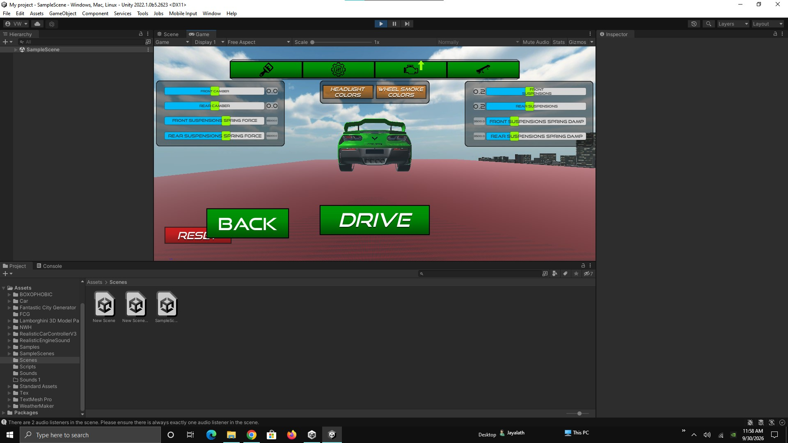

Web Development
Responsive interfaces and web experiences.
HTMLCSSJavaScript
AVAILABLE FOR REMOTE OPPORTUNITIES
I'm Vishan Watawala, an aspiring software developer interested in AI, web development, mobile apps and creative technology.
Software Developer · AI Builder
01 const focus = "build"; 02 const learn = true; 03 const ship = () => "next";
01 / ABOUT
I'm a young developer building my skills across software development, AI and digital products. I enjoy taking an idea, breaking it into practical pieces and turning it into something people can actually use.
My current focus is on real projects rather than only tutorials — including my AI scheduling project, Vortex AI, and a Unity racing game.
02 / SKILLS
Technologies and areas I'm learning and working with.
Responsive interfaces and web experiences.
Practical AI features and intelligent workflows.
Cross-platform applications with Flutter.
Combining code, design and interactive experiences.
03 / PROJECTS
An AI-powered time and task scheduling app designed to help users organize tasks, create schedules and manage their time more intelligently.

A racing-game project exploring gameplay systems, vehicle customization, interactive environments and Unity development.
A website I created as a web development project while building practical HTML, CSS and JavaScript skills.
04 / JOURNEY
Completed Advanced Level studies with Combined Mathematics, Physics and ICT.
Completed a six-course full-stack development series, including soft skills training.
Completed web-development learning through LinkedIn and Coursera, focusing on HTML, CSS and JavaScript.
Achieved 2nd place in a Grade 10 coding competition organized by DP Coding.
LET'S BUILD SOMETHING
I'm open to learning, collaborating and exploring remote opportunities.
Get in touch ↗05 / CONTACT
You can reach me by email or explore my work on GitHub.